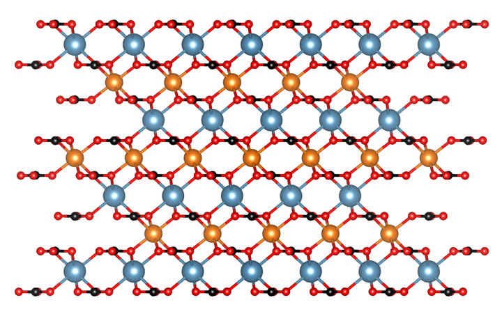

Cation ordering

Dolomite structure drawn with VESTA software
Some minerals are composed by two or more cations that can be arranged in the crystal structure in different ways, e.g. dolomite, norsethite and LDH. In many of these cases, it is interesting to know how these cations are arranged, as this information allows, for example, to understand their formation process or how it affects their properties.
References related to this project:
(2022).
New Insights into Dolomite and Dolomite-Analogue Structures from First Principles Calculations.
ACS Earth and Space Chemistry.
(2022).
Effect of Iron Isomorphic Substitution in Mg:Al and Zn:Al-Layered Double-Hydroxide Structures by Means of First Principle Calculations.
ACS Earth and Space Chemistry.
(2022).
The Dolomite Problem: A Matter of Time.
ACS Earth and Space Chemistry.
(2022).
Effects of the cation ordering in Mg:Al and Zn:Al layered double hydroxides on crystallographic and spectroscopical properties by means of first principles calculations.
Applied Clay Science.
(2021).
DFT Simulations of the Structure and Cation Order of Norsethite, BaMg(CO3)2.
ACS Earth and Space Chemistry.
(2021).
The Effect of Stoichiometry, Mg-Ca Distribution, and Iron, Manganese, and Zinc Impurities on the Dolomite Order Degree: A Theoretical Study.
Minerals.
(2016).
Reaction pathways towards the formation of dolomite-analogues at ambient conditions.
Geochimica et Cosmochimica Acta.
(2014).
The formation of the dolomite-analogue norsethite: Reaction pathway and cation ordering.
Geochimica et Cosmochimica Acta.
(2020).
Dolomite cation order in the geological record.
Chemical Geology.
(2017).
Formation of dolomite analogues at ambient conditions.
Dolomite: Formation, characteristics and environmental impact.